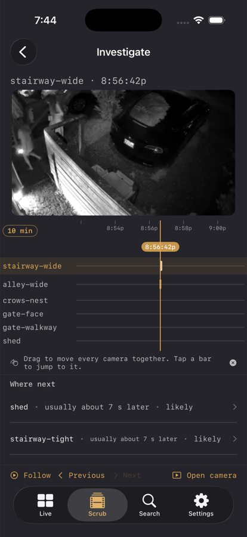
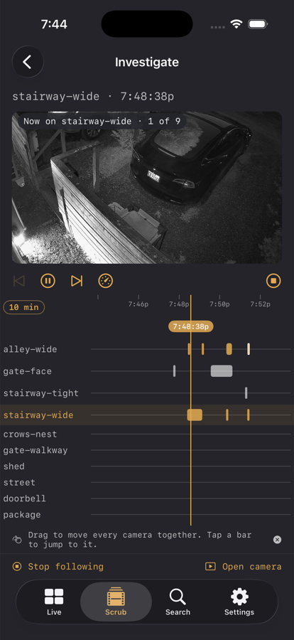

Applies to: iOS and iPadOS 26 / macOS 26.5 / requires the sidecar
Investigate and Follow
On this page
Investigate follows one subject across every camera at once, instead of making you pick cameras and guess at times.
It needs the Marcellus sidecar, because the grouping of sightings into a single visit is the sidecar's work.

How to get there
Four doors, all of which land you at a specific moment rather than at the top of a list:
- Long-press the dossier card on the Scrub reel and choose Investigate this moment.
- The Investigate row on an event's detail page, reached from the card's i tile. This carries the reel's current cursor time, not the event's start.
- The toolbar button in single-camera scrub view, for when you already know it is there.
- Tapping a push notification, when the alert belongs to an encounter. That opens the encounter directly.
The lanes and the cursor
One row per camera, one cursor through all of them. Dragging anywhere over the lanes moves every camera together, and the preview above shows the focused camera's frame at that instant. This is the whole point: time is shared, so you can see what the other cameras were doing at the same second.
- Tap a bar to follow that sighting. The camera becomes the focused one and the cursor jumps to where the bar begins.
- Tap a camera's name to switch to it without moving the cursor. That is a different gesture with a different result, on purpose.
- A faint bar is something that has been sitting still for more than half an hour. A parked car, not a passer-by.
- A chevron on a bar's left edge means the sighting began before the visible window, rather than the bar pretending to start at the edge.
- The capsule at the left of the time axis cycles the window: 2 minutes, 5 minutes, 10 minutes, 30 minutes, 1 hour. It starts at 10 minutes.
Where next
Below the lanes, Where next lists the cameras this subject is likely to turn up on and roughly when, for example "shed, usually about 7 s later, likely".
The confidence is a word, never a score: confirmed, likely, or possible. A suggestion only reads "confirmed" once the sidecar has actually pinned it; the app never upgrades a guess on its own.
Tap a row to jump there.
Same and Not same
Swipe a Where next row for Same or Not same.
This is worth doing. The sidecar chains sightings into one visit using identity matches, shared zones, camera adjacency, and learned transition times between camera pairs. Your corrections are the ground truth it learns those transition times from, so telling it that the figure on the shed camera is the same person shortens every future guess about that pair, and telling it "not same" stops a wrong chain from growing.
Follow

Follow at the bottom left plays the whole visit back for you. It steps through each sighting in order, switching cameras by itself, so you watch someone move through the property without picking anything. The preview tells you where you are: "Now on stairway-wide, 1 of 9".
The transport row under the picture steps between sightings, pauses, and toggles between 1x and 2x. If a camera has no recording for its stretch, Follow says so and moves on. Stop following hands control back.
Stepping by hand
- Previous and Next walk the same visit from sighting to sighting, across every camera, ordered by time. They disable themselves at each end.
- Open camera hands the current moment back to the ordinary Scrub reel, which is where you go to export a clip or look at the surrounding hour in detail.